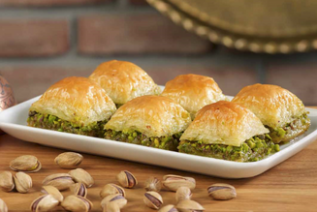

Ataief
L'ataief est une spécialité culinaire égyptienne composée d'une pâte farcie de noix ou d'amandes qui est ensuite frite et trempée dans du sirop.
L'ataief est une spécialité culinaire égyptienne composée d'une pâte farcie de noix ou d'amandes qui est ensuite frite et trempée dans du sirop.

Le baba ganousch est un plat à base d'aubergines qui sont réduites en purée puis mélangées à du tahini et aux ingrédients de base de la cuisine moyen-orientale (ail, citron, huile d'olive).

Le baklava est un dessert hérité d'anciens empires comme ceux des Perses ou des Ottomans. On le trouve également dans les pays d'Afrique du Nord comme l'Égypte. Il se prépare à base de pâte phyllo, de sirop de sucre et de noix.